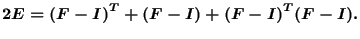
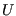
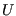

This is a model which was conceived by G. Holzapfel et al. [30] to model arterial walls. It is an anisotropic hyperelastic model, consisting of an isotropic neo-Hooke potential for the base material, complemented by exponential strenghtening terms in fiber direction. The mathematical form of the potential satisfies:
| (269) |
where
 for  and

for
and

for  . Thus, the fibers do not take up any force under
compression. Although the material was originally defined for
arteries, it is expected to work well for other fiber reinforced
materials too, such as reinforced nylon. The material model
implemented thus far can cope with up to 4 different fibers. The material
definition consists of a *MATERIAL card defining the name of
the material. This name HAS TO START WITH ''ELASTIC_FIBER'' but can be
up to 80 characters long. Thus, the last 67 characters can be freely
chosen by the user. Within the material definition a *USER
MATERIAL card has to be used satisfying:
. Thus, the fibers do not take up any force under
compression. Although the material was originally defined for
arteries, it is expected to work well for other fiber reinforced
materials too, such as reinforced nylon. The material model
implemented thus far can cope with up to 4 different fibers. The material
definition consists of a *MATERIAL card defining the name of
the material. This name HAS TO START WITH ''ELASTIC_FIBER'' but can be
up to 80 characters long. Thus, the last 67 characters can be freely
chosen by the user. Within the material definition a *USER
MATERIAL card has to be used satisfying:
First line:
Following line if one fiber direction is selected:
If more than one fiber direction is selected (up to a maximum of four), the four entries characterizing fiber direction 1 are repeated for the subsequent directions. Per line no more than eight entries are allowed. If more are needed, continue on the next line.
Example: *MATERIAL,NAME=ELASTIC_FIBER *USER MATERIAL,CONSTANTS=18 1.92505,0.026,0.,0.7071,2.3632,0.8393,0,-0.7071, 2.3632,0.8393,0.7071,0.,2.3632,0.8393,-0.7071,0., 2.3632,0.8393
defines an elastic fiber materials with four different fiber directions (0,0.7071,0.7071), (0,-0.7071,0.7071), (0.7071,0.,0.7071) and (-0.7071,0.,0.7071). The constants are and .